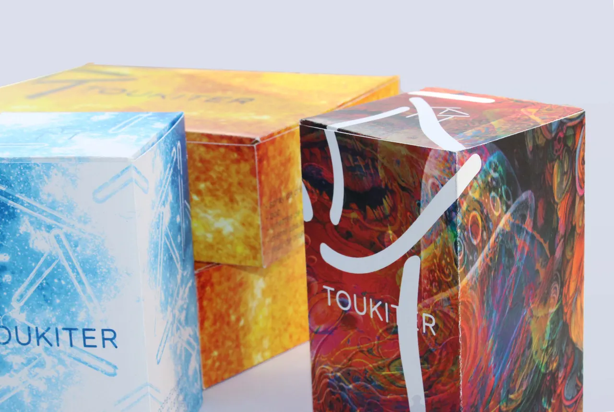
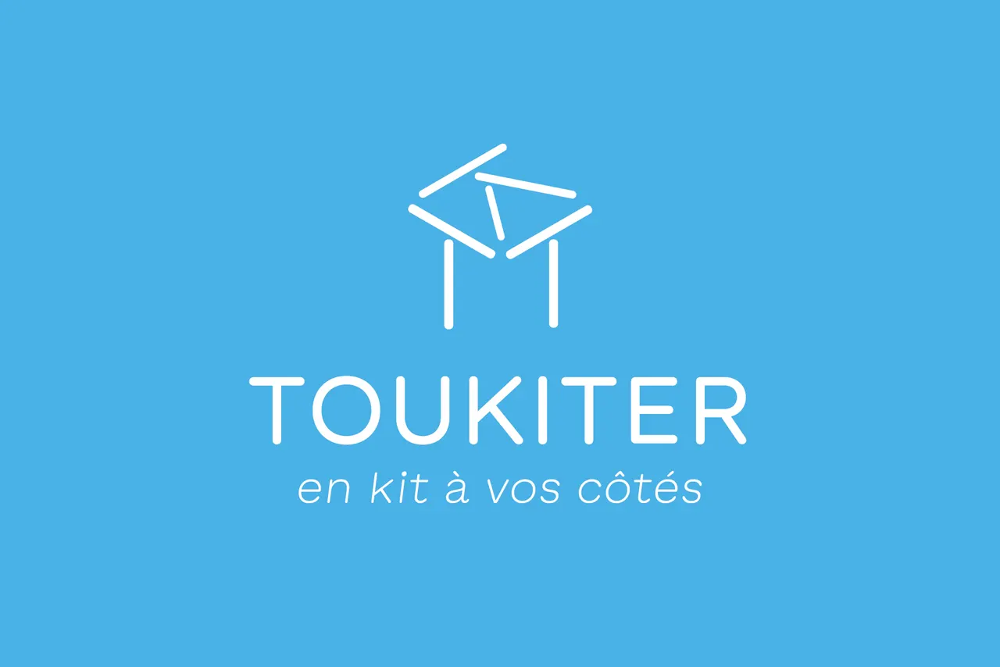
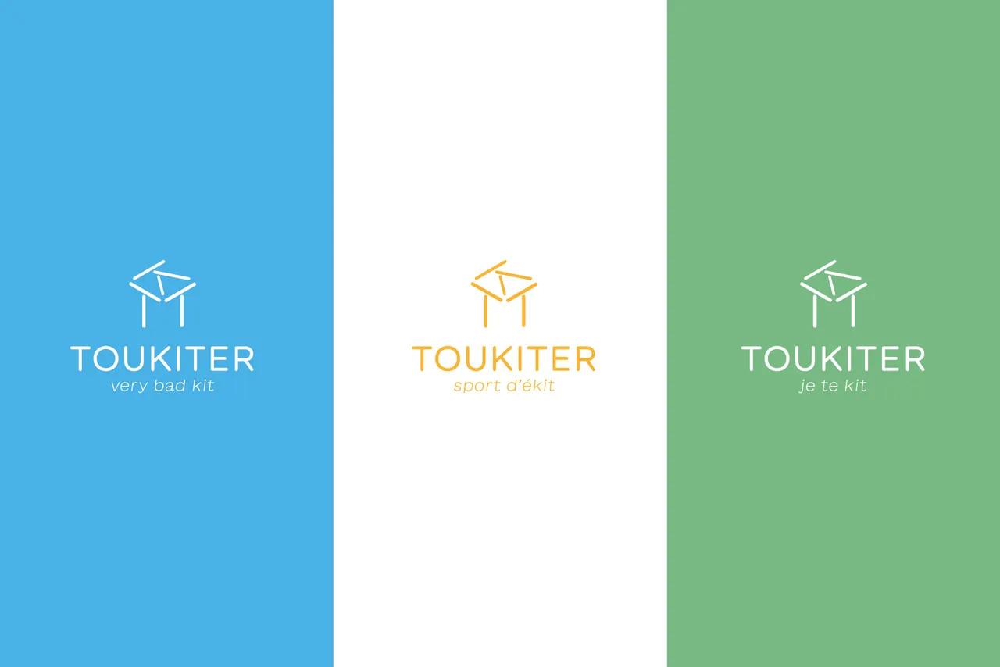
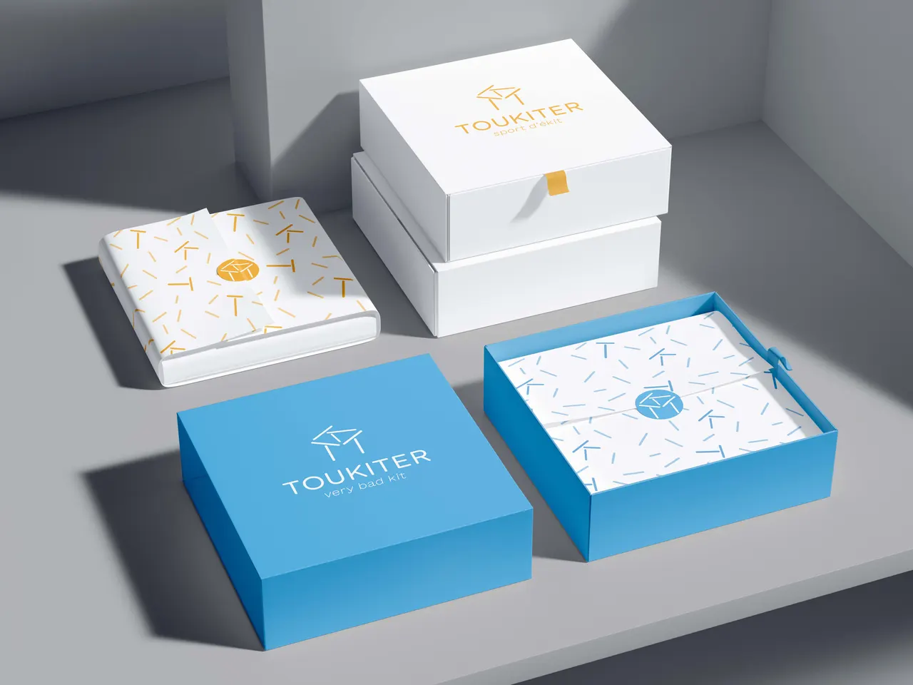
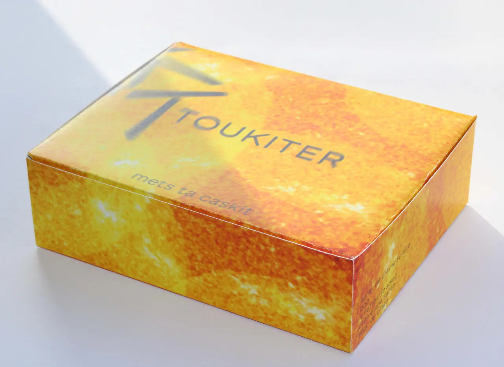
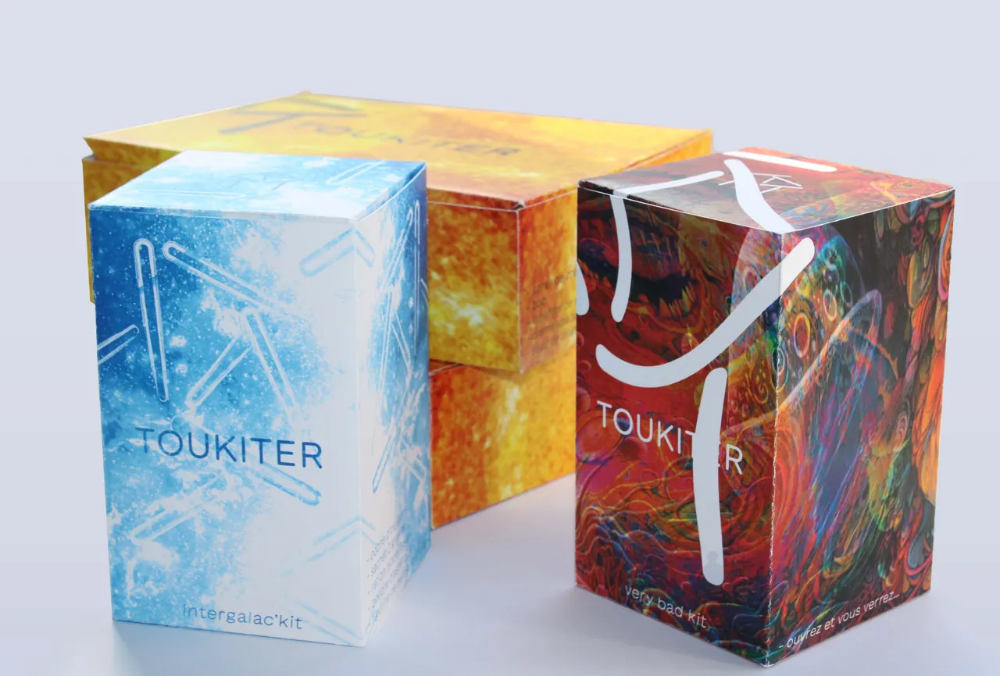

Retour

TOUKITER
- 2025
Identité visuelle de la marque « Toukiter » et de tout le branding qui l’accompagne. Toukiter, c’est une chaîne de kits portatifs en tout genre. L’idée est de fournir un kit d’objets utiles à chaque situation qu’on peut rencontrer, allant du kit de bricolage au kit intergalactique. L’accent est mis sur l’aspect simple et pratique de la marque. Réalisé en collaboration avec Eugénie Fernet.









